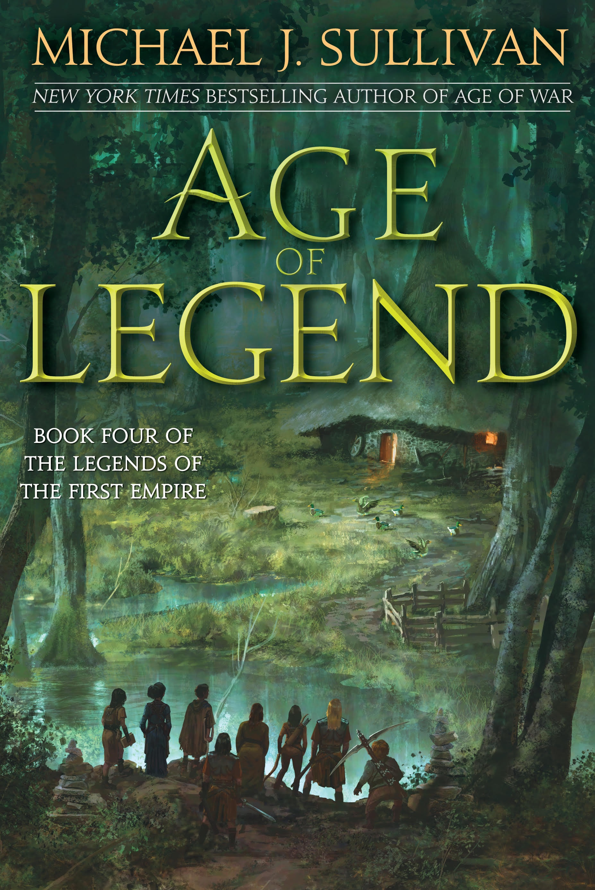

"Age of Legend"
- Read on 2023-06-27
- Rating: ️️️️️
- Format: 🎧 (14 hours 34 minutes)
I finished this book less than 5 minutes ago. I really enjoyed where this book was going in the series - it's another great installment. But, the book just... ended. Like, it was in the middle of two major storylines, and simply ended unceremoniously. Although I have theories as to why the book would end where it did, it just doesn't really matter. I guess I'll start the next one in the series.
- Prior: Greenlights
- Next: Age of Death